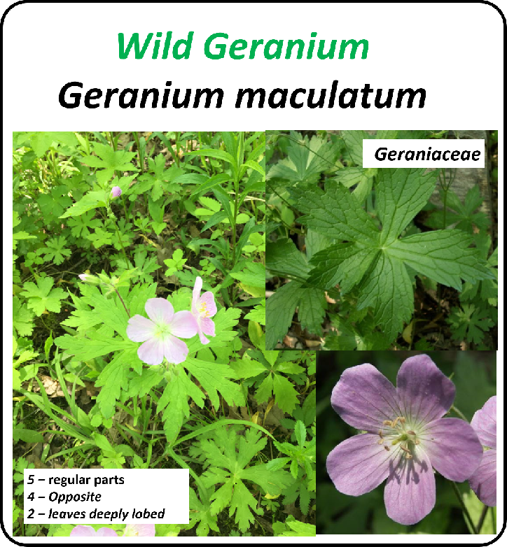
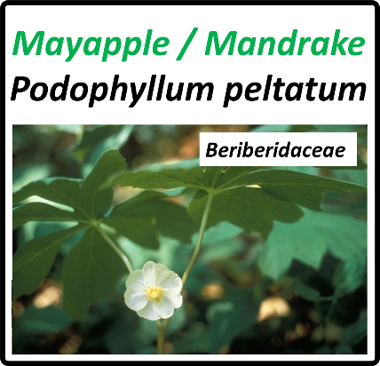
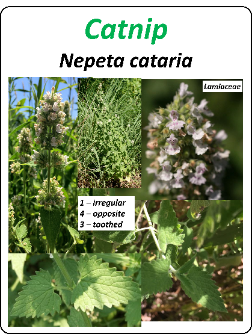
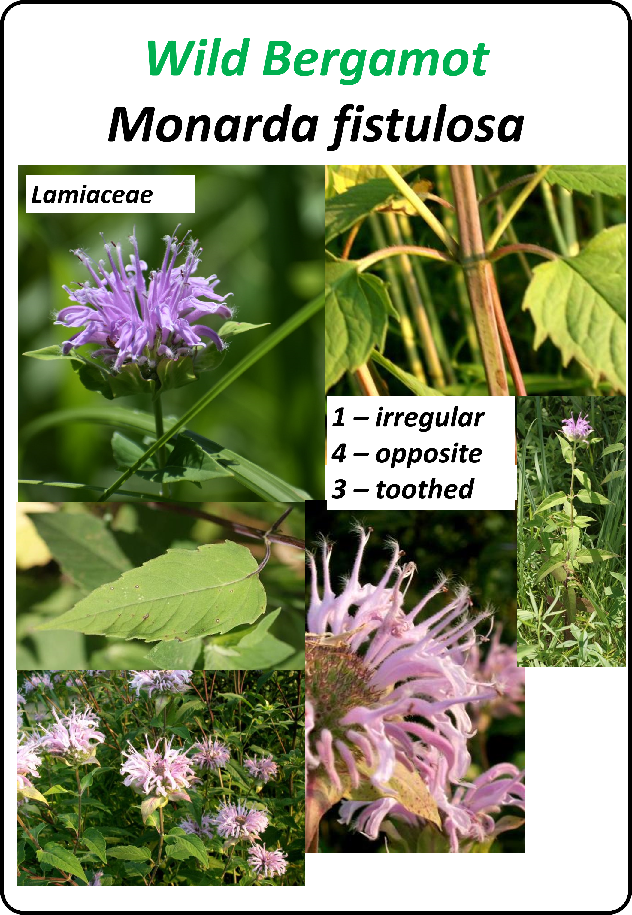
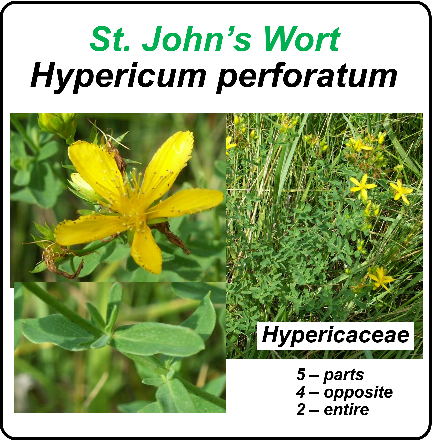
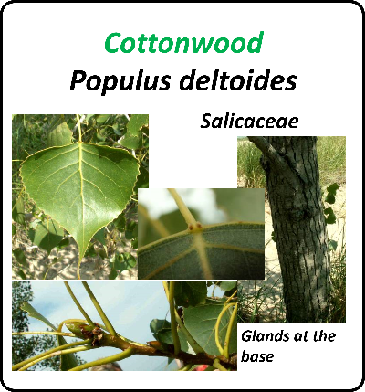
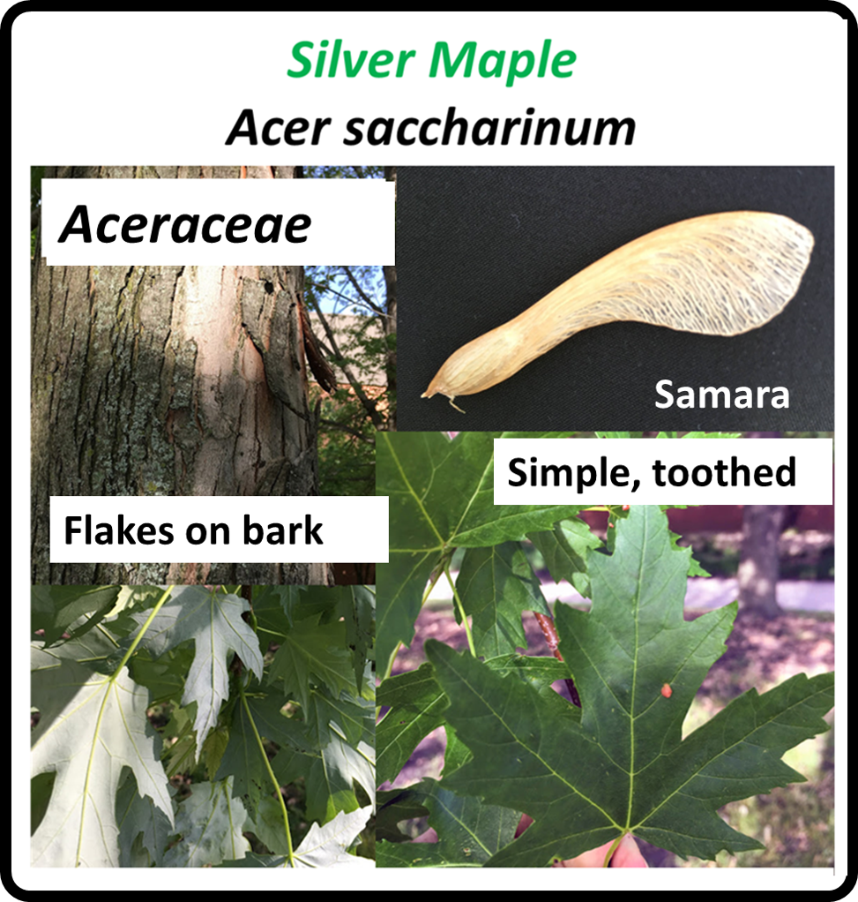
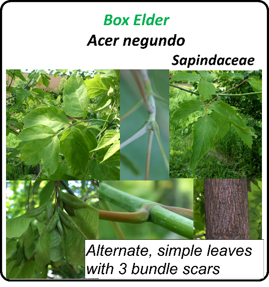
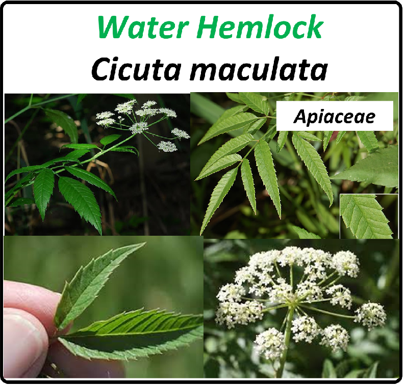
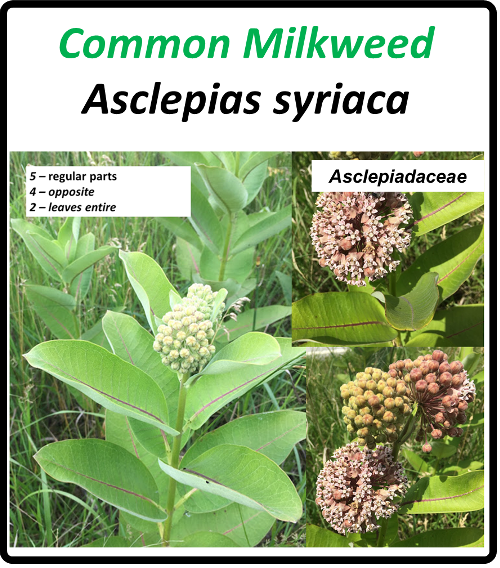

<!DOCTYPE html>
<html>
    <head>
        <title>10 Local Flora points</title>

        <link rel="stylesheet" href="https://unpkg.com/leaflet@1.6.0/dist/leaflet.css"
        integrity="sha512-xwE/Az9zrjBIphAcBb3F6JVqxf46+CDLwfLMHloNu6KEQCAWi6HcDUbeOfBIptF7tcCzusKFjFw2yuvEpDL9wQ=="
        crossorigin=""/>

        <script src="https://unpkg.com/leaflet@1.6.0/dist/leaflet.js"
        integrity="sha512-gZwIG9x3wUXg2hdXF6+rVkLF/0Vi9U8D2Ntg4Ga5I5BZpVkVxlJWbSQtXPSiUTtC0TjtGOmxa1AJPuV0CPthew=="
        crossorigin=""></script>

    </head>
    <style>
    body{color:navyblue;}
    </style>
    <body>


        <div id="map" style="height: 800px"></div>

        <script type="text/javascript">

          var map = L.map('map', {
            center: [42.0100, -87.7988],
            zoom: 12
          });

          L.tileLayer('http://tile.stamen.com/watercolor/{z}/{x}/{y}.png', {
           attribution: 'Map tiles by Stamen Design, under CC BY 3.0. Data by OpenStreetMap, under ODbL. and https://www.censopoblacion.gt/',
           maxZoom: 18,
           minZoom: 5
          }).addTo(map);


                    var floricon = L.icon({
            iconUrl: 'flor.png', // url that links to the icon image file
            iconSize:     [38, 38], // size of the icon image in pixels
            iconAnchor:   [19, 19], // the top left corner of the icon will be aligned so that this point is at the marker's geographical location
            popupAnchor:  [0, -10]// point from which the popup should open, relative to the iconAnchor
          });

                    var arbolicon = L.icon({
            iconUrl: 'arbolito.png',
            iconSize:     [38, 38], // size of the icon image in pixels
            iconAnchor:   [19, 19], // the top left corner of the icon will be aligned so that this point is at the marker's geographical location
            popupAnchor:  [0, -10]

        });

        var geranium = L.marker([42.065,-87.72], {icon: floricon}).addTo(map);
        var podo = L.marker([42.065,-87.79], {icon: floricon}).addTo(map);
        var nepeta = L.marker([41.989,-87.727], {icon: floricon}).addTo(map);
        var monarda = L.marker([41.990,-87.724], {icon: floricon}).addTo(map);
        var hyper = L.marker([42.032,-87.795], {icon: floricon}).addTo(map);
        var populus = L.marker([41.974,-87.731], {icon: arbolicon}).addTo(map);
        var saccharinum = L.marker([41.980,-87.719], {icon: arbolicon}).addTo(map);
        var negundo = L.marker([41.975,-87.730], {icon: arbolicon}).addTo(map);
        var cicuta = L.marker([42.062,-87.775], {icon: floricon}).addTo(map);
        var asclepias = L.marker([41.988,-87.724], {icon: floricon}).addTo(map);

        geranium.bindPopup("Geranium maculatum");
        podo.bindPopup("Podophyllum peltatum");
        nepeta.bindPopup("Nepeta cataria");
        monarda.bindPopup("Monarda fistulosa");
        hyper.bindPopup("Hypericum perforatum");
        populus.bindPopup("Populus deltoides");
        saccharinum.bindPopup("Acer saccharinum");
        negundo.bindPopup("Acer negundo");
        cicuta.bindPopup("Cicuta maculata");
        asclepias.bindPopup("Asclepias syriaca");

        var picgeranium = '';
        var picpodo = '';
        var picnepeta = '';
        var picmonarda= '';
        var pichyper = '';
        var picpopulus = '';
        var picsaccharinum = '';
        var picnegundo = '';
        var piccicuta = '';
        var picasclepias = '';

        geranium.bindPopup(picgeranium);
        podo.bindPopup(picpodo);
        nepeta.bindPopup(picnepeta);
        monarda.bindPopup(picmonarda);
        hyper.bindPopup(pichyper);
        populus.bindPopup(picpopulus);
        saccharinum.bindPopup(picsaccharinum);
        negundo.bindPopup(picnegundo);
        cicuta.bindPopup(piccicuta);
        asclepias.bindPopup(picasclepias);


        </script>
   </body>
</html>
